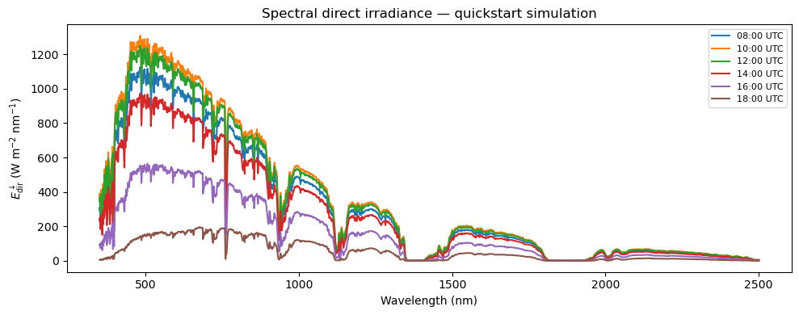

PyRadtran Quickstart#
This notebook walks through the recommended pyRadtran workflow from scratch:
One-time setup — write machine-specific paths to the master config (
~/.pyradtran/config.yaml).Build a simulation config in Python and save it as a
.yamlfile — so you always know exactly what settings were used.Run the simulation via the xarray accessor
ds.pyradtran.run(config_path=...).Inspect the generated
uvspecinput file — the bridge between your Python dict and the actual libRadtran call.Visualise the results.
Config cascade (later layers win):
Package defaults →~/.pyradtran/config.yaml(master) → simulation YAML
import logging
import xarray as xr
import pandas as pd
import numpy as np
import matplotlib.pyplot as plt
from pathlib import Path
# pyRadtran public API
from pyradtran import (
load_config,
save_master_config,
list_solar_spectra,
list_atmosphere_profiles,
SOLAR_SPECTRA,
ATMOSPHERE_PROFILES,
)
from pyradtran.interface import PyRadtranAccessor # registers ds.pyradtran
# Adjust to DEBUG if you want to see every uvspec call
logging.getLogger('pyradtran').setLevel(logging.INFO)
print("pyRadtran imported successfully.")
pyRadtran imported successfully.
Step 1 — One-time master config setup#
Run this cell once to store your libRadtran installation paths in
~/.pyradtran/config.yaml. Every subsequent simulation YAML you write
can omit these paths; they will be picked up automatically.
# ── Edit the paths below to match YOUR libRadtran installation ──────────────
LIBRADTRAN_BIN = "/opt/libRadtran-2.0.6/bin/uvspec"
LIBRADTRAN_DATA = "/opt/libRadtran-2.0.6/data"
# atmosphere_profile and solar_spectrum accept short names (see cell below)
# or full absolute paths.
master_path = save_master_config(
libradtran_bin=LIBRADTRAN_BIN,
libradtran_data=LIBRADTRAN_DATA,
atmosphere_profile="afglus", # short name → data/atmmod/afglus.dat
solar_spectrum="NewGuey2003", # short name → data/solar_flux/NewGuey2003.dat
output_dir="./pyradtran_output",
working_dir="./pyradtran_work",
)
print(f"Master config written to: {master_path}")
print()
print("Contents:")
print(master_path.read_text())
Master config saved to: /home/josh/.pyradtran/config.yaml
Master config written to: /home/josh/.pyradtran/config.yaml
Contents:
paths:
atmosphere_profile: afglus
libradtran_bin: /opt/libRadtran-2.0.6/bin/uvspec
libradtran_data: /opt/libRadtran-2.0.6/data
output_dir: ./pyradtran_output
solar_spectrum: NewGuey2003
working_dir: ./pyradtran_work
Available solar spectra and atmosphere profiles#
pyRadtran ships a built-in catalog of the files bundled with libRadtran.
Pass any short name to save_master_config(), PathsConfig, or directly
to a simulation config — pyRadtran will resolve it to the full path under
libradtran_data automatically.
print("── Solar spectra ──────────────────────────────────────────────────────")
list_solar_spectra()
print()
print("── Atmosphere profiles ────────────────────────────────────────────────")
list_atmosphere_profiles()
── Solar spectra ──────────────────────────────────────────────────────
Short name Description
----------------------------------------------------------------------
kurudz_1.0nm Kurucz (1985) solar spectrum, 1 nm resolution, 250–10000 nm
kurudz_0.1nm Kurucz (1985) solar spectrum, 0.1 nm resolution
NewGuey2003 Gueymard (2003) high-resolution solar spectrum
Thekaekara Thekaekara (1974) solar spectrum
── Atmosphere profiles ────────────────────────────────────────────────
Short name Description
----------------------------------------------------------------------
afglus US Standard Atmosphere 1976
afglms Mid-latitude Summer
afglmw Mid-latitude Winter
afglt Tropical
afglss Sub-arctic Summer
afglsw Sub-arctic Winter
mcclams McClatchey Mid-latitude Summer (extended)
mcclamw McClatchey Mid-latitude Winter (extended)
afglus_ch4_vmr US Standard – CH4 VMR profile
afglus_co_vmr US Standard – CO VMR profile
afglus_n2o_vmr US Standard – N2O VMR profile
afglus_n2_vmr US Standard – N2 VMR profile
afglus_no2 US Standard – NO2 profile
Step 2 — Build the simulation config in Python#
Instead of hand-editing a YAML file, we define the simulation settings right here in Python. This makes the notebook self-documenting: the reader can see every parameter and its value at a glance.
After editing, we call cfg.to_yaml() to persist it. The saved YAML
is what gets passed to ds.pyradtran.run(); it is merged on top of the
master config, so paths do not need to be repeated.
# ── Simulation parameters ────────────────────────────────────────────────────
# Start from the merged package defaults + master config, then customise.
cfg = load_config() # reads ~/.pyradtran/config.yaml + package defaults
# Spectral range
cfg.simulation_defaults.wavelength_nm = [350, 2500]
cfg.simulation_defaults.mol_abs_param = "lowtran per_nm"
cfg.simulation_defaults.rte_solver = "twostr"
cfg.simulation_defaults.source = "solar"
cfg.simulation_defaults.integrate_wavelength = False
# Output columns and altitude(s)
cfg.simulation_defaults.output_columns = ["lambda", "edir", "edn", "eup"]
cfg.simulation_defaults.output_altitudes_km = [0.0]
# Surface
cfg.simulation_defaults.albedo_value = 0.15
# Atmosphere
cfg.simulation_defaults.ozone_du = 300.0
cfg.simulation_defaults.h2o_mm = 2.0
cfg.simulation_defaults.h2o_source = "fixed"
# Clouds: disabled for this quickstart
cfg.simulation_defaults.clouds.enabled = False
# Execution
cfg.execution.max_workers = 1
cfg.execution.cleanup_temp_files = False # keep .inp files so we can inspect them
# ── Save to YAML ─────────────────────────────────────────────────────────────
config_path = Path("config/quickstart.yaml")
cfg.to_yaml(config_path)
print(f"Simulation config saved to: {config_path.resolve()}")
2026-04-19 23:37:21,372 - pyradtran.config - INFO - Configuration written to config/quickstart.yaml
Simulation config saved to: /home/josh/pyRadtran/book/notebooks/config/quickstart.yaml
# ── Inspect the saved YAML ───────────────────────────────────────────────────
print(f"─── {config_path} ───")
print(config_path.read_text())
─── config/quickstart.yaml ───
execution:
cleanup_temp_files: false
debug_mode: false
max_workers: 1
timeout_seconds: 300
output:
filename_prefix: pyradtran_sim
filename_suffix: _results.nc
netcdf_encoding:
complevel: 5
zlib: true
paths:
atmosphere_profile: /opt/libRadtran-2.0.6/data/atmmod/afglus.dat
libradtran_bin: /opt/libRadtran-2.0.6/bin/uvspec
libradtran_data: /opt/libRadtran-2.0.6/data
output_dir: pyradtran_output
radiosonde_base: /path/to/radiosonde/data
solar_spectrum: /opt/libRadtran-2.0.6/data/solar_flux/NewGuey2003.dat
working_dir: pyradtran_work
simulation_defaults:
albedo_value: 0.15
clouds:
cloud_fraction: 1.0
cloud_source: parametric
cloud_type: wc
effective_radius_um: 10.0
enabled: false
era5_lat: null
era5_lon: null
era5_time: null
ic_file: null
ice_content_g_m3: 0.0
layer_bottom_km: 1.0
layer_top_km: 2.0
water_content_g_m3: 0.1
wc_file: null
h2o_mm: 2.0
h2o_source: fixed
integrate_wavelength: false
mol_abs_param: lowtran per_nm
output_altitudes_km:
- 0.0
output_columns:
- lambda
- edir
- edn
- eup
ozone_du: 300.0
parameter_overrides: {}
rte_solver: twostr
source: solar
surface_temperature_k: 273.15
sza: null
viewing_geometry: nadir
wavelength_nm:
- 350
- 2500
Step 3 — Set up an xarray Dataset and run the simulation#
We create a minimal xarray Dataset with time, latitude, and
longitude coordinates — one row per simulation point — then call
ds.pyradtran.run(config_path=...).
The accessor loads the saved YAML, merges the master config on top, and
dispatches uvspec in parallel for every point.
N = 6 # number of time steps
ds = xr.Dataset(
coords={
"time": pd.date_range("2025-06-21T08:00:00", periods=N, freq="2h"),
"latitude": ("time", [61.0] * N),
"longitude": ("time", [22.0] * N),
}
)
print("Input dataset:")
print(ds)
print()
ds_sim = ds.pyradtran.run(
config_path=config_path,
return_dataset=True,
save_to_file=True,
show_progress=False,
)
print("\nSimulation complete!")
print(f"Output variables : {list(ds_sim.data_vars)}")
print(f"Output coords : {list(ds_sim.coords)}")
print(f"Dataset shape : {dict(ds_sim.dims)}")
2026-04-19 23:37:21,445 - pyradtran.interface - INFO - Auto-generating output path: pyradtran_output/pyradtran_sim_20260419_233721_results.nc
2026-04-19 23:37:21,447 - pyradtran.interface - INFO - Preparing 6 simulations from input dataset with dims ['time']
Input dataset:
<xarray.Dataset> Size: 144B
Dimensions: (time: 6)
Coordinates:
* time (time) datetime64[ns] 48B 2025-06-21T08:00:00 ... 2025-06-21T1...
latitude (time) float64 48B 61.0 61.0 61.0 61.0 61.0 61.0
longitude (time) float64 48B 22.0 22.0 22.0 22.0 22.0 22.0
Data variables:
*empty*
2026-04-19 23:37:25,343 - pyradtran.interface - INFO - Batch execution completed: 6/6 simulations successful
2026-04-19 23:37:25,801 - pyradtran.io - INFO - Results saved to pyradtran_output/pyradtran_sim_20260419_233721_results.nc
2026-04-19 23:37:25,802 - pyradtran.interface - INFO - Results saved to pyradtran_output/pyradtran_sim_20260419_233721_results.nc
Simulation complete!
Output variables : ['lambda', 'edir', 'edn', 'eup']
Output coords : ['time', 'wavelength', 'altitude']
Dataset shape : {'time': 6, 'wavelength': 1565, 'altitude': 1}
/tmp/ipykernel_6387/564906186.py:25: FutureWarning: The return type of `Dataset.dims` will be changed to return a set of dimension names in future, in order to be more consistent with `DataArray.dims`. To access a mapping from dimension names to lengths, please use `Dataset.sizes`.
print(f"Dataset shape : {dict(ds_sim.dims)}")
Step 4 — Inspect the generated uvspec input file#
Every simulation produces a temporary .inp file in the working_dir.
Reading the first one shows you exactly how the Python dict → YAML →
uvspec input pipeline works.
# The working directory is set in the config
working_dir = Path(cfg.paths.working_dir)
# Pick the most recently modified .inp file
inp_files = list(working_dir.glob("*.inp"))
if inp_files:
latest_inp = max(inp_files, key=lambda p: p.stat().st_mtime)
print(f"─── {latest_inp.name} (latest generated input file) ───\n")
print(latest_inp.read_text())
else:
print("No .inp files found – make sure cleanup_temp_files=False in the config.")
─── tmpe7dcmij3.inp (latest generated input file) ───
rte_solver twostr
mol_abs_param lowtran per_nm
data_files_path /opt/libRadtran-2.0.6/data
atmosphere_file /opt/libRadtran-2.0.6/data/atmmod/afglus.dat
source solar /opt/libRadtran-2.0.6/data/solar_flux/NewGuey2003.dat
sza 79.55
day_of_year 172
wavelength 350 2500
albedo 0.15
output_user lambda edir edn eup
zout 0.0000
umu 1.0
quiet
## Step 5 — Visualise the results
fig, ax = plt.subplots(figsize=(10, 4))
for i, t in enumerate(ds_sim.time.values):
label = pd.Timestamp(t).strftime("%H:%M UTC")
ds_sim.isel(time=i)["edir"].plot(ax=ax, label=label)
ax.set_xlabel("Wavelength (nm)")
ax.set_ylabel(r"$E_\mathrm{dir}^\downarrow$ (W m$^{-2}$ nm$^{-1}$)")
ax.set_title("Spectral direct irradiance — quickstart simulation")
ax.legend(fontsize=8)
plt.tight_layout()
plt.show()
